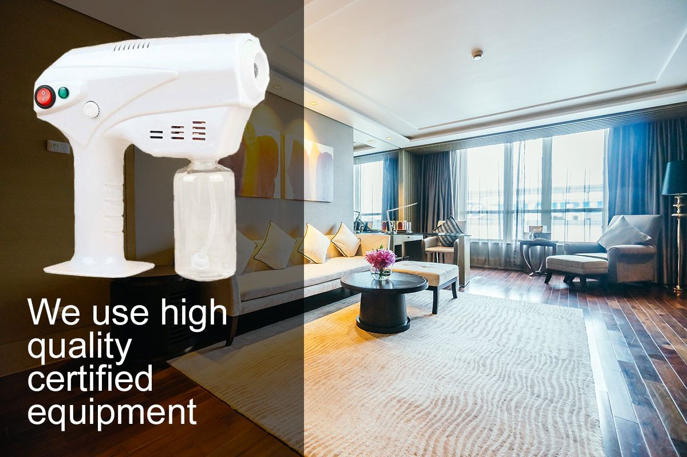

<section class="testimonial main-block center-block" id="ozone">
    <div class="container">
        <div class="row">
            <div class="col-md-12">
                <h2>You are in a <span>safe place!</span></h2>
                <h6>You can feel that security in your home, office or any area that you use daily.<br> 
                    Cleaning with ozone gives you the guarantee of a disinfected and clean space</h6>
                    <div class="row content-ozono">
                    <div class="col-md-6"> 
                    
                    
                </div>
                <div class="col-md-6">
                    <p>Ozone is a gas that we find in nature, very useful for its exceptional properties 
                        to achieve in-depth hygiene. Ozone is the most powerful natural disinfectant that
                         exists, surpassing the results of bleach or other chlorinated products 
                         traditionally used for this purpose thousands of times.</p>
                    <p>
                        Needs ranging from obtaining quality air, free of organic and inorganic contamination, 
                        as well as bad odors, to purifying drinking water for drinking or for personal hygiene, 
                        as well as being very practical for cleaning of the house. 
                    </p>
                    <a href="ozono-cleaning.html" class="btn btn-info">I want to know more</a>
                </div>
            </div>
            </div>
        </div>
    </div>
</section>